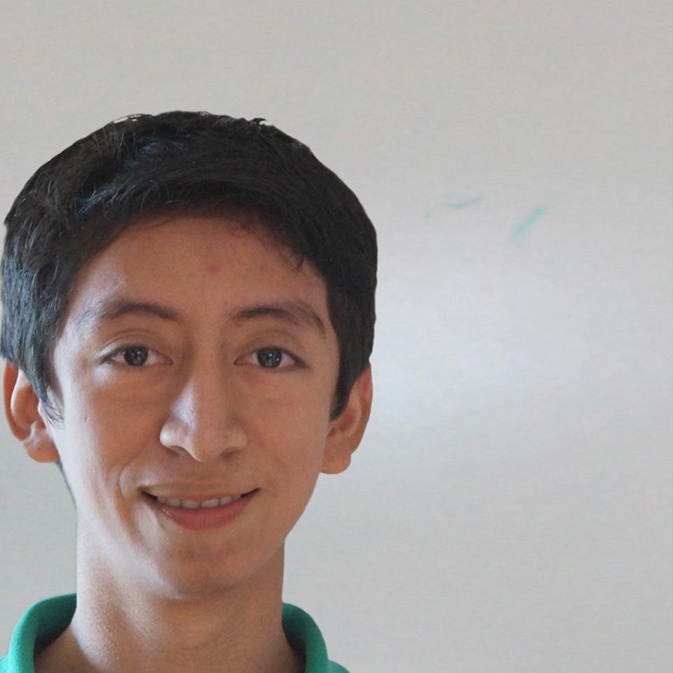

Alfredo Barrón
Rodríguez |
Calle Magnolia #412
Col. Guadalupe
Ciudad Valles, S.L.P.
4811024136
(481)3817553
alfreedobarron@gmail.com |
 |
✔ Información Personal
- Fecha de Nacimiento
- 11 Septiembre 1992
- Lugar de Nacimiento
- Ciudad Valles, San Luis Potosí. México
- Nacionalidad
- Mexicana
- Estado Civil
- Soltero
- CURP
- BARA920911HSPRDL04
|
|
✔ Formación Academica
| 2011 - 2015 |
Licenciatura en Ingeniería en Tecnologías de Información y Comunicaciones, Instituto
Tecnológico de Ciudad Valles, Ciudad Valles, San Luis Potosí. (En curso) |
| 2008 - 2011 |
Especialidad en Informática, Colegio de Bachilleres Plantel 06, Cd. Valles, San Luis Potosí. |
| 2005 - 2008 |
Taller Taquimecanografia, Esc. Sec. Pedro Antonio Santos Rivera, Cd. Valles, San Luis Potosí. |
|
✔ Conocimientos Informáticos
| Ofimatica |
Microsoft Office |
Diseño WEB |
HTML, CSS |
Programación Estructura
y OO |
Java, Visual Basic, C/C++ |
Base de Datos |
MySQL, PostgreSQL |
|
|
✔ Formación Complementaria
| Octubre 2013 |
Taller: Inteligencia Artificial, Instituto Tecnológico de Ciudad Valles, Cd. Valles, San Luis Potosí. (6 horas) |
| Octubre 2012 |
Curso de MATLAB, Instituto Tecnológico de Ciudad Valles, Ciudad Valles, San Luis Potosí.
Impartido por del Dr. Omar Espinosa Guerra (15 horas) |
|